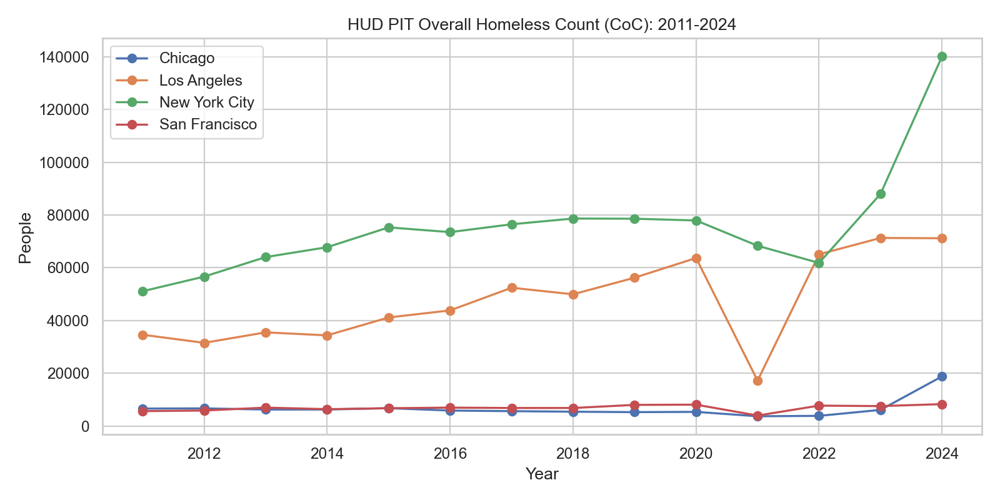
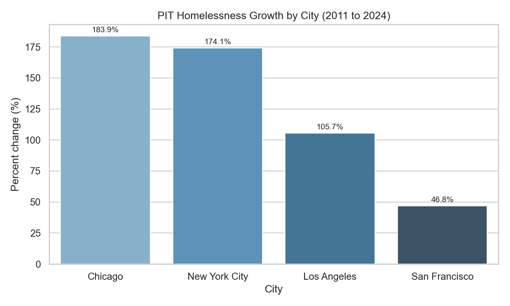
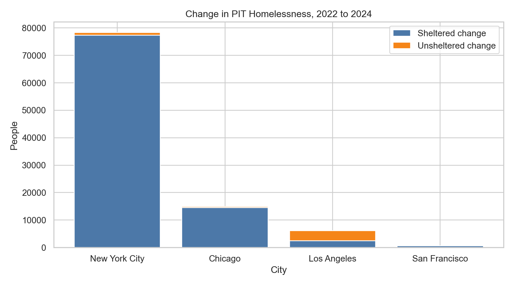
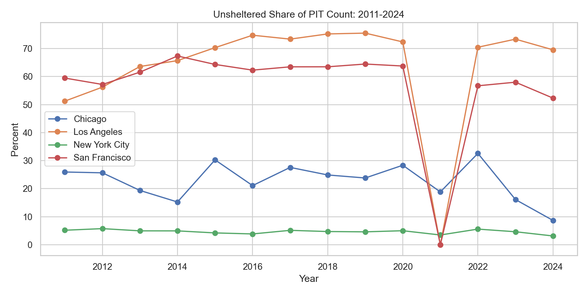
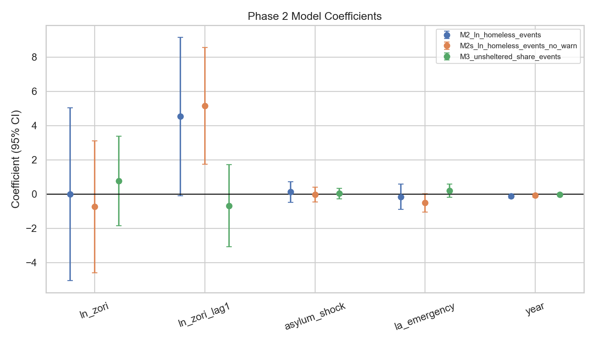
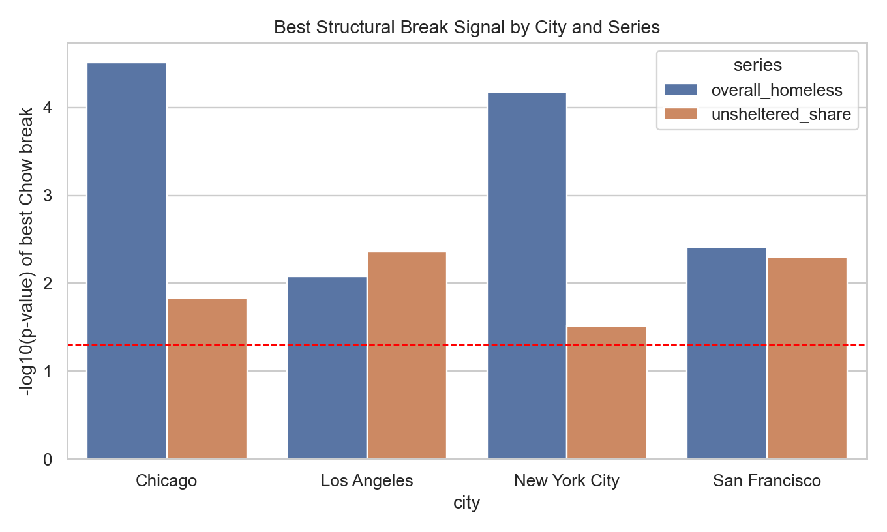
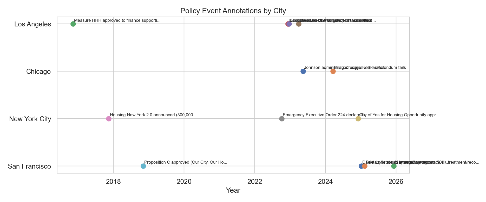
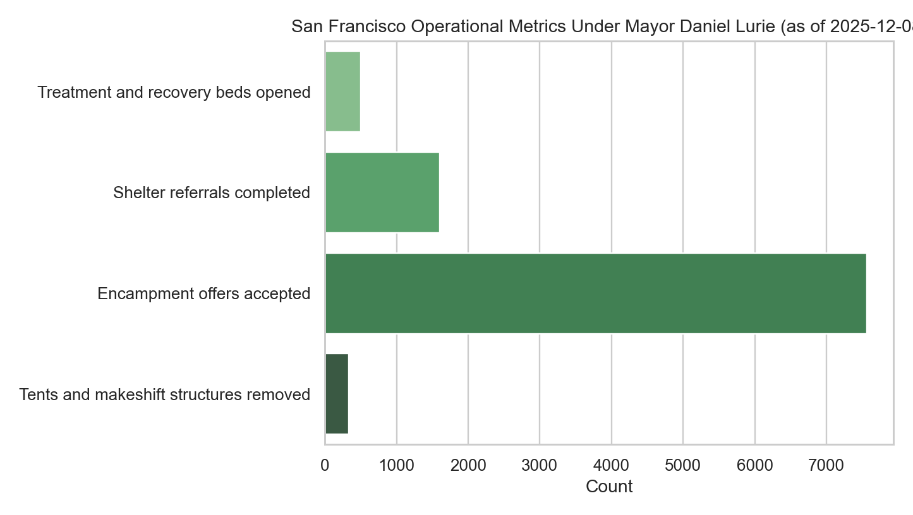

Homelessness and Housing: 4-City Deep Dive (Phase 2)
SF | NYC | Chicago | Los Angeles
TL;DR
- Long-run growth in all four cities.
- Break tests point to 2020-2021 regime shifts.
- Policy annotations explain likely channels.
- SF Daniel Lurie period now included with 2025 operational data.
Long-run trends


Composition and unsheltered dynamics


Phase 2 model evidence


Policy timeline annotations

San Francisco: Daniel Lurie (2025)

Interpretation
- Rent pressure appears as a lagged structural factor in panel models.
- 2020-2021 breaks indicate system-level shifts beyond rent alone.
- Recent NYC/Chicago changes are shelter-system heavy.
- LA and SF show different unsheltered dynamics and policy levers.